경비지도사-1차(법학개론,민간경비론) (2019-11-16 기출문제)
1과목: 법학개론
1. 법의 의의에 관한 설명으로 옳지 않은 것은?
- 법은 사회규범의 일종이다.
- 법은 재판규범이 되기도 한다.
- 법은 존재법칙이지만 자연현상은 당위법칙이다.
- 법은 양면성을 갖지만 도덕은 일면성을 갖는다.
(정답률: 64%)

2. 지방자치단체의 자치입법에 해당하는 것을 모두 고른 것은?
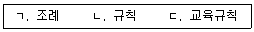
- ㄱ, ㄴ
- ㄱ, ㄷ
- ㄴ, ㄷ
- ㄱ, ㄴ, ㄷ
(정답률: 58%)
3. 성문법과 불문법에 관한 설명으로 옳은 것은?
- 조례는 불문법에 해당한다.
- 헌법에 의하여 체결ㆍ공포된 조약은 성문법에 해당한다.
- '죄형법정주의'의 '법'에는 법률 및 관습법이 포함된다.
- 성문법은 사회적 변화에 신속히 대응할 수 있는 장점이 있다.
(정답률: 59%)
4. 법의 분류에 관한 설명으로 옳은 것은?
- 민사소송법은 사법이다.
- 공법이 축소되고 사법이 확대되는 '공법의 사법화' 경향이 강해지고 있다.
- 형법은 범죄를 저지른 사람에게만 적용된다는 점에서 특별법이다.
- 권리나 의무의 발생ㆍ변경ㆍ소멸을 규율하는 법은 실체법이다.
(정답률: 49%)
5. 법의 적용에 관한 설명으로 옳은 것은?
- 간주의 효과는 반증이 있으면 뒤집을 수 있다.
- 사실의 진실 여부와는 관계없이 의제하는 것은 추정이다.
- 입증책임은 원칙적으로 사실의 존부를 주장하는 자가 부담한다.
- 2인 이상이 동일한 위난으로 사망한 경우에는 동시에 사망한 것으로 간주한다.
(정답률: 49%)
6. 유권해석에 해당하는 것은?
- 문리해석
- 반대해석
- 행정해석
- 유추해석
(정답률: 47%)
7. 권리자의 일방적 의사표시에 의하여 법률관계를 변동시킬 수 있는 권리는?
- 형성권
- 청구권
- 항변권
- 지배권
(정답률: 42%)
8. 권리와 의무에 관한 설명으로 옳지 않은 것은?
- 공권(公權)은 공법관계에서 인정되는 권리이다.
- 권리에서 파생되는 개개의 법률상의 작용을 권능이라고 한다.
- 헌법상 납세의 의무는 의무만 있고 권리를 수반하지 않는 경우에 해당한다.
- 어떤 행위를 하지 않아야 하는 의무를 작위의무라 하고, 어떤 행위를 하여야 하는 의무를 부작위의무라 한다.
(정답률: 53%)
9. 권리의 충돌에 관한 설명으로 옳은 것은?
- 채권 상호간에는 원칙적으로 성립의 선후에 따른 우선순위의 차이가 없다.
- 물권과 채권이 충돌할 경우에는 원칙적으로 채권이 우선한다.
- 소유권과 이를 제한하는 제한물권 사이에서는 원칙적으로 소유권이 우선한다.
- 동일물에 성립한 전세권과 저당권은 그 성립시기에 상관없이 저당권이 우선한다.
(정답률: 43%)
10. 대한민국 헌법 전문에서 언급하고 있는 내용이 아닌 것은?
- 3ㆍ1운동
- 4ㆍ19민주이념
- 5ㆍ18민주화운동
- 정의ㆍ인도와 동포애
(정답률: 51%)
11. 헌법상 국회의원 선거에서 보장하고 있는 선거원칙이 아닌 것을 모두 고른 것은?
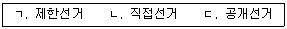
- ㄱ
- ㄱ, ㄷ
- ㄴ, ㄷ
- ㄱ, ㄴ, ㄷ
(정답률: 54%)
12. 헌법 제37조제2항의 규정이다. ( )에 들어갈 용어가 순서대로 옳은 것은?
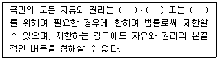
- 국가안전보장, 질서유지, 공공복리
- 국가안전보장, 질서유지, 환경보호
- 국가안전보장, 환경보호, 공공복리
- 환경보호, 질서유지, 공공복리
(정답률: 68%)
13. 헌법상 국회의원에 관한 설명으로 옳지 않은 것은?
- 국회의원의 수는 법률로 정하되, 200인 이상으로 한다.
- 국회의원은 현행범인인 경우를 제외하고는 회기중 국회의 동의없이 체포 또는 구금되지 아니한다.
- 국회의원이 회기전에 체포 또는 구금된 때에는 현행범인이 아닌 한 국회의 요구가 있으면 회기중 석방된다.
- 국회의원은 국회에서 직무상 행한 발언과 표결에 관하여 국회내ㆍ외에서 책임을 지지 아니한다.
(정답률: 53%)
14. 헌법 제113조제1항의 규정이다. ( )에 들어갈 숫자는?
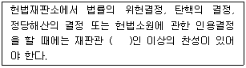
- 5
- 6
- 7
- 8
(정답률: 53%)
15. 민법상 법인의 기관에 관한 설명으로 옳지 않은 것은?
- 법인은 이사를 두어야 한다.
- 이사는 선량한 관리자의 주의로 그 직무를 행하여야 한다.
- 법인은 2인 이상의 감사를 두어야 한다.
- 사단법인의 이사는 매년 1회 이상 통상총회를 소집하여야 한다.
(정답률: 49%)
16. 민법상 대리에 관한 설명으로 옳지 않은 것은?
- 대리인은 행위능력자임을 요하지 아니한다.
- 복대리인은 그 권한 내에서 대리인을 대리한다.
- 임의대리인은 본인의 승낙이 있거나 부득이한 사유가 있는 경우, 복대리인을 선임할 수 있다.
- 대리인이 그 권한 내에서 본인을 위한 것임을 표시한 의사표시는 직접 본인에게 대하여 효력이 생긴다.
(정답률: 44%)
17. 민법상 타인의 토지에 건물 기타 공작물이나 수목을 소유하기 위하여 그 토지를 사용할 수 있는 물권은?
- 지역권
- 지상권
- 유치권
- 저당권
(정답률: 53%)
18. 민법상 당사자 일방이 금전 기타 대체물의 소유권을 상대방에게 이전할 것을 약정하고 상대방은 그와 같은 종류, 품질 및 수량으로 반환할 것을 약정함으로써 그 효력이 생기는 전형계약은?
- 소비대차
- 사용대차
- 임대차
- 위임
(정답률: 43%)
19. 경비업자 甲과 경비계약을 체결한 乙은 甲의 과실로 인한 채무불이행으로 손해를 입었다. 이에 관한 설명으로 옳지 않은 것은?
- 다른 의사표시가 없으면 甲은 乙의 손해를 금전으로 배상하여야 한다.
- 채무불이행에 관하여 손해배상액을 예정한 경우, 그 금액이 부당히 과다하면 법원은 적당히 감액할 수 있다.
- 甲의 채무불이행에 관하여 乙에게도 과실이 있다면 법원은 손해배상의 책임 및 그 금액을 정함에 이를 참작하여야 한다.
- 만약, 甲의 채무불이행에 고의나 과실이 없었더라도 乙은 甲에게 손해배상을 청구할 수 있다.
(정답률: 50%)
20. 경비업자 甲은 乙의 귀중품을 경비하던 중, 이를 절취하려는 丙의 손목시계를 정당방위로 부득이 파손하였다. 이에 관한 설명으로 옳은 것을 모두 고른 것은?
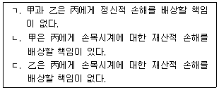
- ㄱ, ㄴ
- ㄱ, ㄷ
- ㄴ, ㄷ
- ㄱ, ㄴ, ㄷ
(정답률: 56%)
21. 경비업자 甲의 불법행위와 관련한 민법 제766조제1항의 규정이다. ( )에 들어갈 숫자는?
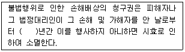
- 1
- 3
- 5
- 10
(정답률: 47%)
22. 형법상 미수범 등에 관한 설명으로 옳지 않은 것은?
- 미수범의 형은 기수범보다 감경하여야 한다.
- 범인이 자의로 실행에 착수한 행위를 중지한 때에는 형을 감경 또는 면제한다.
- 범죄의 음모가 실행의 착수에 이르지 아니한 때에는 법률에 특별한 규정이 있어야 처벌할 수 있다.
- 실행 수단의 착오로 인하여 결과발생이 불가능하더라도 위험성이 있는 때에는 처벌하되, 형을 감경 또는 면제할 수 있다.
(정답률: 38%)
23. 형법상 '죄를 범한 사람이 약취ㆍ유인한 자를 안전한 장소로 풀어 준 때에는 그 형을 감경할 수 있다'는 별도의 감경규정이 없는 범죄는?
- 인질강요죄
- 인질강도죄
- 인신매매죄
- 미성년자 약취ㆍ유인죄
(정답률: 44%)
24. 형사소송법상 형사피고인이 변호인이 없는 때에 법원이 직권으로 국선변호인을 선정해야 하는 경우가 아닌 것은?
- 피고인이 구속된 때
- 피고인이 미성년자인 때
- 피고인이 심신장애의 의심이 있는 때
- 피고인이 단기 2년의 금고에 해당하는 사건으로 기소된 때
(정답률: 53%)
25. 형사소송법상 고소ㆍ고발에 관한 설명으로 옳은 것은?
- 고소를 취소한 자는 다시 고소할 수 있다.
- 고소의 취소는 대법원 확정판결 전까지 가능하다.
- 피해자의 법정대리인은 피해자의 동의 없이는 독립하여 고소할 수 없다.
- 친고죄의 공범 중 그 1인에 대한 고소는 다른 공범자에 대하여도 효력이 있다.
(정답률: 36%)
26. 형사소송법상 무기징역에 해당하는 범죄의 공소시효기간은?
- 7년
- 10년
- 15년
- 20년
(정답률: 42%)
27. 형사소송법상 면소판결의 선고를 해야 하는 경우는?
- 피고인에 대한 재판권이 없는 때
- 친고죄 사건에서 고소의 취소가 있은 때
- 공소의 시효가 완성되었을 때
- 공소가 제기된 사건에 대하여 다시 공소가 제기되었을 때
(정답률: 43%)
28. 형사소송법상 재심청구에 관한 설명으로 옳지 않은 것은?
- 재심의 청구는 원판결의 법원이 관할한다.
- 재심의 청구로 형의 집행은 정지된다.
- 재심의 청구가 청구권의 소멸 후인 것이 명백한 때에는 결정으로 기각하여야 한다.
- 재심의 청구는 형의 집행을 받지 아니하게 된 때에도 할 수 있다.
(정답률: 41%)
29. 상법상 회사에 관한 설명으로 옳지 않은 것은?
- 회사는 다른 회사의 무한책임사원이 될 수 있다.
- 회사의 주소는 본점소재지에 있는 것으로 한다.
- 회사는 본점소재지에서 설립등기를 함으로써 성립한다.
- 회사는 합명회사, 합자회사, 유한책임회사, 주식회사와 유한회사로 분류된다.
(정답률: 51%)
30. 상법상 주주총회의 특별결의사항에 해당하지 않는 것은?
- 영업 전부의 양도
- 영업 전부의 임대
- 타인과 영업의 손익 일부를 같이 하는 계약
- 회사의 영업에 중대한 영향을 미치는 다른 회사의 영업 일부의 양수
(정답률: 48%)
31. 보험계약의 직접 당사자로서 보험사고가 발생한 경우에 보험금을 지급할 의무를 지는 자는?
- 보험자
- 피보험자
- 보험계약자
- 보험수익자
(정답률: 50%)
32. 상법상 피보험자가 보험기간 중에 사고로 인하여 제3자에게 배상할 책임을 지는 경우에 이를 보상하는 보험은?
- 보증보험
- 생명보험
- 상해보험
- 책임보험
(정답률: 48%)
33. 근로기준법 제24조제1항의 규정이다. ( )에 각각 들어갈 용어로 옳지 않은 것은?
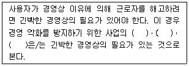
- 양도
- 위탁
- 인수
- 합병
(정답률: 50%)
34. 산업재해보상보험법상 진폐에 따른 보험급여의 종류에 해당하지 않는 것은?
- 장해급여
- 요양급여
- 간병급여
- 장의비
(정답률: 35%)
35. 사회보장기본법상 생애주기에 걸쳐 보편적으로 충족되어야 하는 기본욕구와 특정한 사회위험에 의하여 발생하는 특수욕구를 동시에 고려하여 소득ㆍ서비스를 보장하는 맞춤형 사회보장제도는?
- 사회보험
- 공공부조
- 사회서비스
- 평생사회안전망
(정답률: 38%)
36. 국민연금법상 국민연금가입자의 종류에 해당하는 것을 모두 고른 것은?
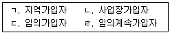
- ㄱ, ㄷ
- ㄱ, ㄴ, ㄹ
- ㄴ, ㄷ, ㄹ
- ㄱ, ㄴ, ㄷ, ㄹ
(정답률: 58%)
37. 행정주체에 해당하지 않는 것은?
- 한국은행
- 부산광역시
- 세종특별자치시
- 행정안전부장관
(정답률: 50%)
38. 사인(私人)이 행정청에 대하여 어떠한 사실을 알리는 공법상의 행위는?
- 신고
- 확인
- 하명
- 수리
(정답률: 62%)
39. 행정행위의 부관에 해당하지 않는 것은?
- 조건
- 철회
- 부담
- 기한
(정답률: 36%)
40. 甲에게 수익적이지만 동시에 乙에게는 침익적인 결과를 발생시키는 행정행위는?
- 대인적 행정행위
- 혼합적 행정행위
- 복효적 행정행위
- 대물적 행정행위
(정답률: 42%)
2과목: 민간경비론
41. 우리나라 민간경비의 주요 임무가 아닌 것은?
- 범죄예방
- 위험방지
- 증거수집
- 질서유지
(정답률: 75%)
42. 국가독점에 의한 비효율성을 극복하기 위해 시장경쟁논리를 도입하여 효율성을 증대시키고자 하는 민간경비이론은?
- 경제환원 이론
- 이익집단 이론
- 수익자부담 이론
- 민영화 이론
(정답률: 60%)
43. 핑커톤(Allan Pinkerton)의 업적에 관한 설명으로 옳지 않은 것은?
- 미국 철도수송경비의 발전에 기여했다.
- 오늘날 프로파일링(profiling) 수사기법에 영향을 주었다.
- 남북전쟁 당시 링컨 대통령의 경호업무를 수행하였다.
- 최초의 중앙감시방식 경보서비스 회사를 설립하였다.
(정답률: 58%)
44. 민간경비산업이 급성장한 계기를 연결한 것으로 옳지 않은 것은?
- 한국 - 1986년 아시안게임, 1988년 서울올림픽
- 미국 - 제1차 세계대전, 제2차 세계대전
- 영국 - 제2차 세계대전, 1948년 런던올림픽
- 일본 - 1964년 동경올림픽, 1970년 오사카만국박람회
(정답률: 56%)
45. 기계경비의 단점에 관한 설명으로 옳지 않은 것은?
- 오경보로 인한 불필요한 출동은 경찰력 운용의 효율성에 장애요인이 된다.
- 야간에는 경비활동의 제약을 받아 효율성이 저하된다.
- 오경보 방지를 위한 유지ㆍ보수에 많은 비용이 발생한다.
- 계약상대방에게 기기 사용요령 및 운영체계 등에 관하여 설명해야하는 번거로움이 있다.
(정답률: 68%)
46. 경비업법상 규정된 경비업무에 관한 설명으로 옳지 않은 것은?
- 특수경비업무: 운반 중에 있는 현금ㆍ유가증권ㆍ귀금속ㆍ상품 그 밖의 물건에 대하여 도난ㆍ화재 등 위험발생 방지
- 시설경비업무: 경비를 필요로 하는 시설 및 장소에서의 도난ㆍ화재 그 밖의 혼잡 등으로 인한 위험발생 방지
- 신변보호업무: 사람의 생명이나 신체에 대한 위해의 발생을 방지하고 그 신변을 보호
- 기계경비업무: 경비대상시설에 설치한 기기에 의하여 감지ㆍ송신된 정보를 그 경비대상시설외의 장소에 설치한 관제시설의 기기로 수신하여 도난ㆍ화재 등 위험발생 방지
(정답률: 68%)
47. 다음 설명 중 옳지 않은 것은?
- 공경비의 대상은 국민이고, 민간경비는 특정 의뢰인이다.
- 공경비의 목적은 법집행이고, 민간경비는 의뢰자의 보호 및 손실 감소이다.
- 공경비의 주체는 정부이고, 민간경비는 영리기업이다.
- 공경비의 임무는 범죄의 예방과 대응이고, 민간경비는 범죄의 예방과 피해회복이다.
(정답률: 67%)
48. 환경설계를 통한 범죄예방(CPTED)에 관한 설명으로 옳지 않은 것은?
- 범죄의 원인을 환경적 요인에서 찾고자 한다.
- 동심원영역론(Concentric Zone Theory)은 CPTED의 접근방법 중 하나이다.
- 2차적 기본전략은 자연적 접근방법을 통해 범죄예방 효과를 극대화하고자 한다.
- 모든 인간은 잠재적 범죄욕망을 가지고 있기 때문에 사전에 범행기회를 차단하고자 한다.
(정답률: 56%)
49. 로버트 필(Robert Peel)의 업적에 관한 설명으로 옳지 않은 것은?
- 영국 수도경찰을 창설하였다.
- 교구경찰, 주ㆍ야간경비대, 수상경찰, 보우가경찰대 등으로 경찰조직을 더욱 세분화하였다.
- Peelian Reform(형법개혁안)은 현대적 경찰조직 설립의 시초가 되었다.
- 경찰은 훈련되고 윤리적이며, 정부의 봉급을 받는 요원이어야 한다고 주장하였다.
(정답률: 50%)
50. 범죄예방 및 안전사고 방지를 위해 관내 금융기관 등 현금다액취급업소, 상가, 여성운영업소 등에 대하여 방범시설 및 안전설비의 설치상황, 자위방범 역량 등을 점검하여 미비점을 보완하도록 지도하기 위한 경찰활동은?
- 방범홍보
- 경찰방문
- 생활방범
- 방범진단
(정답률: 60%)
51. 우리나라 민간경비산업에 관한 설명으로 옳지 않은 것은?
- 1976년 용역경비업법이 제정되었고, 1978년 한국용역경비협회가 설립되었다.
- 인건비 절감을 위해서 인력경비보다 기계경비의 성장이 가속화될 것이다.
- 2001년 경비업법 개정으로 특수경비업무가 도입되어 청원경찰의 입지가 축소되었다.
- 비용절감 등의 정책시행으로 인하여 계약경비보다 자체경비가 발전하고 있다.
(정답률: 62%)
52. 우리나라 경비업법에 규정된 경비업무로 옳은 것은?
- 탐정업무
- 핵연료물질 등의 위험물 운반경비업무
- 호송경비업무
- 교통유도경비업무
(정답률: 69%)
53. 경비업법령에 따른 일반경비원과 특수경비원의 신임교육에 공통되는 과목은?
- 사격
- 총검술
- 총기조작
- 기계경비실무
(정답률: 61%)
54. 특정한 손실 발생 시 회사에 얼마나 심각한 영향을 미치는지를 고려하고, 손실에 의한 위험의 빈도를 조사하는 경비위해요소 분석단계는?
- 경비위해요소 인지
- 손실발생 가능성 예측
- 손실(경비위험도) 평가
- 경비활동 비용효과 분석
(정답률: 50%)
55. 경비위해요소 분석에 관한 설명으로 옳지 않은 것은?
- 경비계획 수립 시 모든 시설물마다 인력경비와 기계경비시스템을 동일하게 적용해야만 한다.
- 손실이 크게 예상되지 않는 소규모 경비시설물은 손쉬운 손실예방책인 성능이 우수한 잠금장치를 사용할 수 있다.
- 기업의 손실영역이 증가하고 복잡해지면 1차원적 경비형태만으로 대응하기 어렵다.
- 손실예방을 위해 최적의 방어책을 세우기 위해서는 위해요소에 대한 인지와 평가가 우선적으로 선행되어야 한다.
(정답률: 62%)
56. 폭발ㆍ화재의 위험은 화학공장이 더 크고, 절도ㆍ강도에 의한 잠재적 손실은 소매점에서 더욱 크게 나타난다는 설명과 관련된 위해는?
- 자연적 위해
- 인위적 위해
- 특정한 위해
- 지형적 위해
(정답률: 58%)
57. 확인된 위험의 대응방법에 관하여 옳게 연결된 것은?
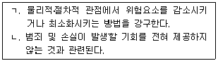
- ㄱ: 위험의 감소, ㄴ: 위험의 회피
- ㄱ: 위험의 감소, ㄴ: 위험의 분산
- ㄱ: 위험의 제거, ㄴ: 위험의 감수
- ㄱ: 위험의 제거, ㄴ: 위험의 대체
(정답률: 66%)
58. 다음 설명에 관한 경비부서 관리자의 역할은?
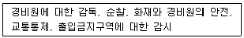
- 관리상의 역할
- 조사상의 역할
- 예방상의 역할
- 경영상의 역할
(정답률: 45%)
59. 경비조사의 과정을 순서대로 나열한 것은?
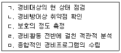
- ㄱ - ㄴ - ㄷ - ㄹ – ㅁ
- ㄴ - ㄷ - ㄹ - ㄱ - ㅁ
- ㄷ - ㄹ - ㄱ - ㄴ – ㅁ
- ㄹ - ㄱ - ㄴ - ㄷ - ㅁ
(정답률: 64%)
60. 외곽시설물 경비의 2차적 방어수단은?
- 경보장치
- 외벽
- 울타리
- 외곽방호시설물
(정답률: 62%)
61. 총체적 경비에 관한 설명으로 옳은 것은?
- A경비회사는 2019년 1월에 시설경비원을 고용하여 단일 예방체제를 구축하였다.
- B경비회사는 손실예방을 위해 전체적인 계획없이 2019년 9월(1개월 간)에만 필요하여 단편적으로 경비체제를 추가하였다.
- C경비회사는 2019년 10월에 특정한 손실이 발생하여 이에 대응하기 위해 경비체제를 마련하였다.
- D경비회사는 2020년 1월부터는 언제 발생할지 모를 상황에 대비하고 각종 위해 요소를 차단하기 위해 인력경비와 기계경비를 종합한 표준화된 경비체제를 갖출 것이다.
(정답률: 69%)
62. 외곽경비에 관한 설명으로 옳지 않은 것은?
- 경계구역 내 가시지대를 가능한 한 넓히기 위해 모든 장애물을 양쪽 벽으로부터 제거하여야 한다.
- 지붕은 침입자가 지붕을 통하여 창문으로 들어올 수 있는 취약지점이기 때문에 주의하여야 한다.
- 일정기간이나 비상시에만 사용하는 출입구의 경우 평상시에는 폐쇄하고 잠겨있어야 한다.
- 건물자체에 대한 경비활동으로 건물에 대한 출입통제, 출입문ㆍ창문에 대한 보호조치 등을 말한다.
(정답률: 43%)
63. 국가중요시설경비에 관한 설명으로 옳지 않은 것은?
- 국가중요시설이란 공공기관, 공항ㆍ항만, 주요 산업시설 등 적에 의하여 점령 또는 파괴되거나 기능이 마비될 경우 국가안보와 국민생활에 심각한 영향을 주게 되는 시설을 말한다.
- 3지대 방호개념은 제1지대-주방어지대, 제2지대-핵심방어지대, 제3지대-경계지대이다.
- 국가중요시설은 중요도와 취약성을 고려하여 제한지역, 제한구역, 통제구역으로 보호구역을 설정하고 있다.
- 국가중요시설의 통합방위사태는 갑종사태, 을종사태, 병종사태로 구분된다.
(정답률: 57%)
64. 경계구역의 경비조명에 관한 설명으로 옳지 않은 것은?
- 조명시설의 위치는 경비원의 눈을 부시게 하는 것을 피해야 한다.
- 경비조명은 가능한 한 그림자가 넓게 생기도록 하여야 한다.
- 경계조명시설물은 경계구역에서 이용되며, 진입등은 경계지역 내에 위치하여야 한다.
- 경비조명은 경계구역 내 모든 부분을 충분히 비출 수 있도록 적당한 밝기와 높이로 설치한다.
(정답률: 66%)
65. 보호대상인 물건에 직접적으로 센서를 부착하여 그 물건이 움직이게 되면 진동이 발생되어 경보가 발생하는 장치로 정확성이 높아 일반적으로 전시 중인 물건이나 고미술품 보호에 사용되는 경보센서(감지기)는?
- 음파 경보시스템
- 초음파탐지장치
- 적외선감지기
- 진동감지기
(정답률: 72%)
66. 하나의 문이 잠길 경우 전체의 문이 동시에 잠기는 방식으로 교도소 등 동시다발적 사고 발생의 우려가 높은 장소에서 사용되는 패드록(Pad-Locks) 잠금장치는?
- 기억식 잠금장치
- 전기식 잠금장치
- 일체식 잠금장치
- 카드식 잠금장치
(정답률: 70%)
67. 다음에 해당하는 호송경비의 방식은?
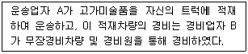
- 통합호송방식
- 분리호송방식
- 휴대호송방식
- 동승호송방식
(정답률: 58%)
68. 소화방법에 관한 설명 중 ( )에 들어갈 용어로 옳은 것은?
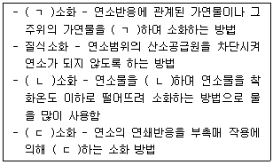
- ㄱ: 억제, ㄴ: 냉각, ㄷ: 제거
- ㄱ: 억제, ㄴ: 제거, ㄷ: 냉각
- ㄱ: 냉각, ㄴ: 억제, ㄷ: 제거
- ㄱ: 제거, ㄴ: 냉각, ㄷ: 억제
(정답률: 57%)
69. 화재유형에 따른 화재대책에 관한 설명으로 옳지 않은 것은?
- 유류화재는 옥내소화전을 사용하여 온도를 발화점 밑으로 떨어뜨리는 것이 가장 효과적인 진압방법이다.
- 금속화재는 물과 반응하여 강한 수소를 발생하는 것이 대부분이므로 화재시 수계 소화약제를 사용해서는 안 된다.
- 가스화재는 점화원을 차단하고 살수 및 냉각으로 진압하는 것이 효과적이다.
- 전기화재는 소화시 물 등의 전기전도성을 가진 약제를 사용하면 감전의 위험이 있으므로 주의해야 한다.
(정답률: 54%)
70. 경보시스템 종류에 관한 설명으로 옳지 않은 것은?
- 중앙관제시스템은 전용전화회선을 통해 비상감지 시 직접 외부의 각 관계기관에 자동으로 연락이 취해지는 방식이다.
- 국부적 경보시스템은 가장 원시적인 경보체계로 일정지역에 국한해 한 두 개의 경보장치를 설치하거나 단순히 사이렌이나 경보음이 울리는 것이다.
- 제한적 경보시스템은 사이렌이나 종, 비상등과 같은 제한된 경보장치를 설치하여 화재예방시설에 주로 사용되며 사람이 없으면 대응할 수 없는 단점이 있다.
- 다이얼 경보시스템은 비상사태가 발생하였을 경우 사전에 입력된 전화번호로 긴급연락을 하는 것으로 설치가 간단하고 유지비가 저렴하다.
(정답률: 40%)
71. 폭발물에 의한 테러 위협에 관한 설명으로 옳지 않은 것은?
- 폭발물에 의한 테러 위협을 당하면 우선적으로 사람들을 건물 밖으로 대피시킨다.
- 테러협박전화가 걸려오면 경비책임자에게 보고하고, 위험이 감지되면 경찰서나 소방서 등 관련기관에 신속하게 연락한다.
- 경비원은 폭발물이 발견되면 그 지역을 자주 출입하는 사람이나 출입이 제한된 사람들의 명단을 파악한 후 신속하게 폭발물을 제거한다.
- 경비원은 폭발물의 폭발력을 약화시키기 위하여 모든 창문과 문은 열어둔다.
(정답률: 64%)
72. 비상사태의 유형에 따른 경비원의 대응에 관한 설명으로 옳지 않은 것은?
- 지진: 지진발생 후 치안공백으로 인한 약탈과 방화행위에 대비
- 가스폭발: 가스폭발 우려가 있을 시 우선 물건이나 장비를 고지대로 이동
- 홍수: 폭우가 예보되면 우선적으로 침수 가능한 지역에 대해 배수시설 점검
- 건물붕괴: 자신이 관리하는 건물의 벽에 금이 가거나 균열이 있는지 확인
(정답률: 66%)
73. 컴퓨터 활용에 잠재된 위험요소로 옳지 않은 것은?
- 컴퓨터를 통한 사기ㆍ횡령
- 과도한 프로그램의 작성 및 활용
- 조작자의 실수
- 비밀정보의 절취
(정답률: 54%)
74. 컴퓨터를 이용한 사이버테러에 관한 설명으로 옳지 않은 것은?
- 허프건(Huffgun): 고출력 전자기장을 발생시켜 컴퓨터의 자기기록정보를 파괴시키는 수법
- 서비스거부(Denial of Service): 시스템에 과도한 부하를 일으켜 데이터나 자원을 정당한 사용자가 적절한 대기시간 내에 사용하는 것을 방해하는 수법
- 논리폭탄(Logic Bomb): 컴퓨터의 일정한 작동시마다 부정행위가 이루어질 수 있도록 프로그램을 조작하는 수법
- 스푸핑(Spoofing): 악성코드에 감염된 사용자 PC를 조작하여 금융정보를 빼내는 수법
(정답률: 41%)
75. 입법적 대책과 관련하여 형법에 규정된 컴퓨터 범죄에 관한 설명으로 옳지 않은 것은?
- 재물손괴죄: 컴퓨터 등 정보처리장치에 장애를 발생하게 하여 사람의 업무를 방해 하는 행위
- 컴퓨터등 사용사기죄: 컴퓨터 등 정보처리장치에 권한 없이 정보를 입력ㆍ변경하여 재산상의 이익을 취득하는 행위
- 비밀침해죄: 봉함 기타 비밀장치한 전자기록 등을 기술적 수단을 이용하여 그 내용을 알아낸 행위
- 사전자기록의 위작ㆍ변작죄: 사무처리를 그르치게 할 목적으로 타인의 권리ㆍ의무 또는 사실증명에 관한 전자기록을 위작 또는 변작한 행위
(정답률: 63%)
76. 컴퓨터 에러(Error)방지 대책으로 옳지 않은 것은?
- 적절한 컴퓨터 언어를 사용했는지 여부를 검토하는 시스템 작동 재검토
- 정보접근 권한을 가진 취급자만 컴퓨터 운용에 투입
- 데이터 갱신을 통한 시스템의 재검토
- 정해진 절차에 따라 프로그램이 실행되는지에 대한 절차상의 재평가
(정답률: 46%)
77. 민간경비산업의 문제점에 관한 설명으로 옳지 않은 것은?
- 경비업체 및 인력의 지역적 편중
- 경비업법과 청원경찰법의 일원화
- 경비업체의 영세성
- 민간경비원에 대한 열악한 대우
(정답률: 58%)
78. 경찰과 민간경비의 협력관계 개선방안으로 옳지 않은 것은?
- 민간경비원에 대한 감독 강화
- 합동 범죄예방 및 홍보활동
- 비상연락망 구축과 경비자문서비스센터의 공동운영
- 업무기준의 명확화를 통한 마찰 해소
(정답률: 63%)
79. 민간경비산업의 발전방안으로 옳지 않은 것은?
- 민간경비원의 전문자격증제도 확립
- 경찰과의 협력체계 구축 및 첨단장비의 개발
- 국가 전담기구의 설치와 행정지도
- 인력경비 중심의 민간경비산업 구축
(정답률: 62%)
80. 융합보안에 관한 설명으로 옳지 않은 것은?
- 융합보안은 물리적 보안요소와 정보보안요소가 통합된 개념이다.
- 융합보안은 출입통제, 접근감시, 잠금장치 등을 통하여 보안의 효과성을 높이는 활동이다.
- 물리적ㆍ기술적ㆍ관리적 보안요소를 상호 연계하여 보안의 효과성을 높인다.
- 보안이 조선, 자동차 등 기타 산업과 결합되어 새로운 서비스나 제품의 안정성과 부가가치를 창출한다.
(정답률: 43%)
법은 사회규범의 일종이며, 사회에서 인정되고 시행되는 규칙이다. 또한, 법은 재판규범이 되기도 한다. 이는 법을 위반한 경우 법원에서 판결을 내리는 것이 가능하다는 것을 의미한다.
하지만 "법은 존재법칙이지만 자연현상은 당위법칙이다."는 옳지 않은 설명이다. 법과 자연현상은 서로 다른 개념이며, 법이 존재하는 이유는 사회적인 규제와 질서를 유지하기 위함이다. 자연현상은 법칙성을 가지지만, 법과는 직접적인 연관성이 없다. 따라서 법은 존재법칙이 아니라 사회적인 규제를 위한 규칙이다.